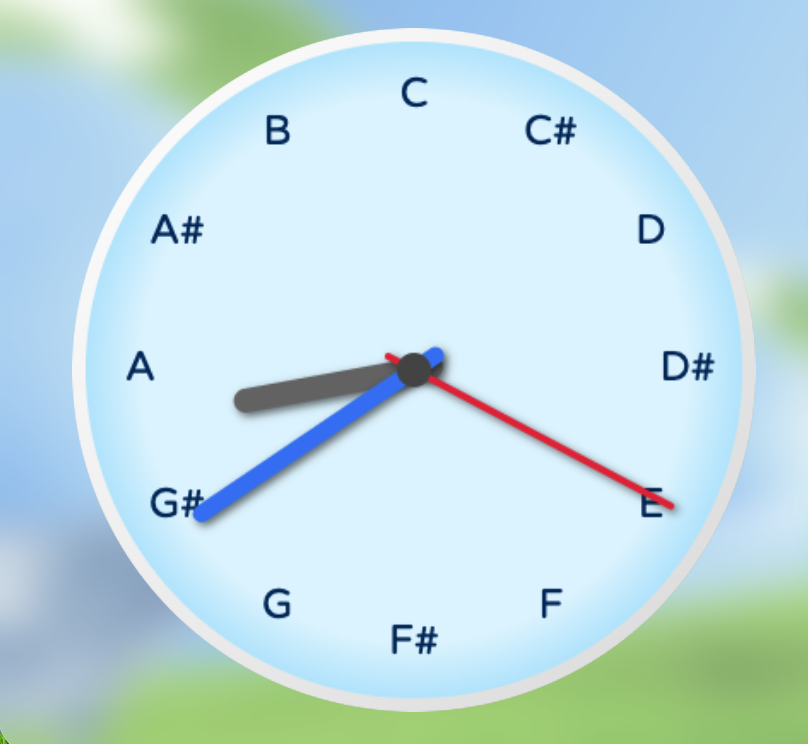
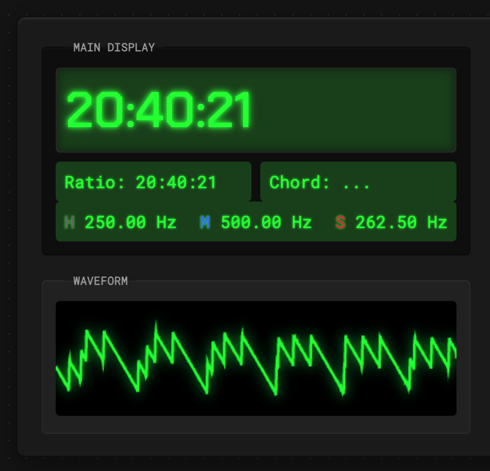
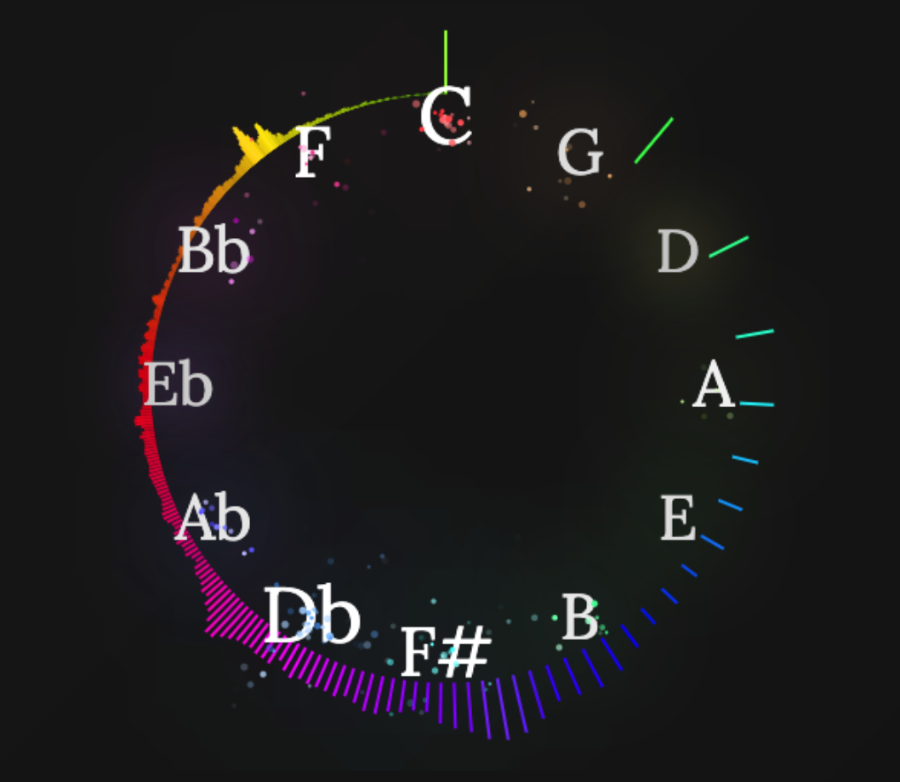

ようこそ
コンテンツ名をクリックするか、Pathwordを入力してください。
...or enter
Path
word
?

Clock Harmonizer
?
アナログ時計の文字盤に12音を対応させました。3本の針が連続的なハーモニーを奏でます。

Digital Clock Synthesizer
?
デジタル時計の hh:mm:ss 表示がそのまま整数比に変換され、Just Intonationを奏でるというシンセサイザーです。マイナス100倍速で再生するとファミコンみたいで面白いですよ。

Circle of Fifths Visualizer
?
音楽ファイルをアップロードすると、音の大きさに応じて五度圏が光ります。楽曲を入れると打楽器の倍音をたくさん拾って面白くないので、単旋律の音声などを入れてみると良いかもしれません。
ユーモア16タイプ診断
?
あなたの笑いのツボを16タイプで診断！友達と結果をシェアして盛り上がろう。